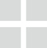
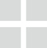

The Contemporary Austin
Art direction by DJ Stout at Pentagram
In 2013 the Austin Museum of Art (AMoA)and Arthouse merged to form one contemporary museum with two locations. We renamed and rebranded the instution as The Contemporary Austin, highlighting the "A" with a blue color that draws from both the glass blocks on the facade of the Jones Center downtown, and the waters that surround historic Laguna Gloria.
A comprehensive and flexible identity system was created to ensure that the expanding locations of the museum remained cohesive.
 
